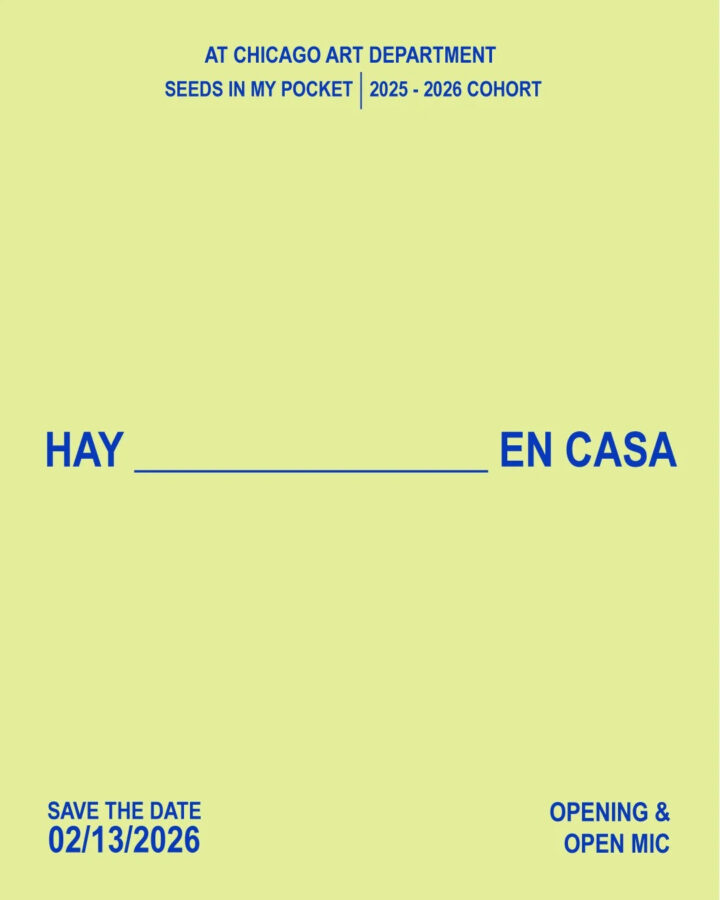

Hay _____ en Casa
Join us for the culmination of Seeds in My Pocket 2025–2026 Cohort, centering the neighborhoods of Humboldt Park and Albany Park. Eight artists come together to share stories, art practices, and reflections on the realities impacting our communities in this current administration. Curated by @meh.work & @jrosadesign , this evening will feature a collaborative wheat-pasting installation, open mic, and group exhibition.
The artists explore themes of home, migration, belonging, resistance, joy, and historical memory filling in the blanks of:
“Hay ______ en Casa” 🎨 Featuring artists:
Thais Beltran @nuestro.chicago.archives
Xitlali Celesté @xistarceleste
Nikko Locander @ali_six_
Josue J. Rivera @islandchild_jr
Diego Rodriguez @_diego.rodriguez